想法
老板到底想要什么？
hely.fun 是怎么搭起来的
主讲 黎健堂
我以前跑市场，
也帮餐馆做生意。
老板到底想要什么？
一张好图里，哪些能换？
怎么让 AI 照着做？
一个人怎么把网站上线？
怎么让用户用着顺手？
五联图怎么越改越好？
Low-angle fashion campaign photograph of a confident model holding a large [product name] very close to the camera, exaggerated perspective with the hand and product dominating the foreground, full-body pose visible in the background, wide stance, dynamic posture, clean pure white studio background, high-key lighting, sharp focus on product, slight depth of field on the model, bold colorful outfit with strong contrast tones, modern beauty advertising aesthetic, ultra-clean composition, commercial studio photography, glossy packaging detail visible, crisp shadows
“帮我做张中秋海报，
放我们家招牌菜。”
做一张图，常见的走法
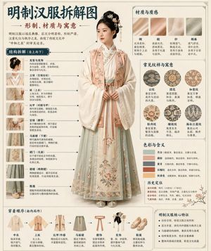
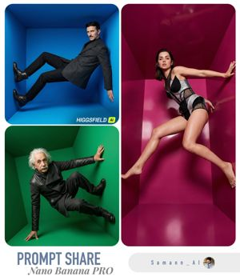
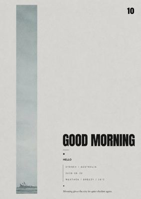
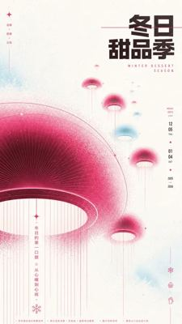
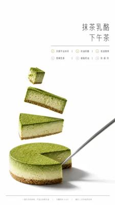
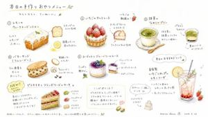
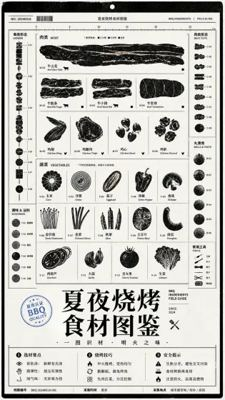
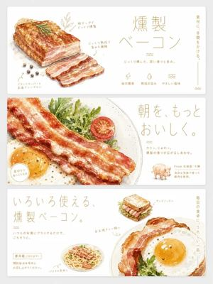
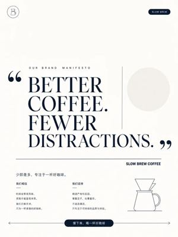

听到一处，就点亮图上的框。
收好图和原始提示词
分类 · 标签拆出这张图的做法
适配策略把能换的地方做成表单
表单 · Agent 结构 · 用户说明检查好，放进案例库
审核 · 导入更新6 月 8 日，把重复的活写下来，让 AI 照着做。
点一个节点，看当时在做什么
7 月最忙，一个月提交 133 次。
| 谁来干 | 干什么活 |
|---|---|
| DeepSeek | 听懂需求、找案例、自动填表 |
| gpt-image-2 | 画图、改图 |
| 视觉模型 | 想怎么改，检查改完的图 |
| GPT-4.1 | 从图反推提示词 |
| BiRefNet | 在本地抠图，保留原像素 |
| 纯程序 | 放大、改色 |
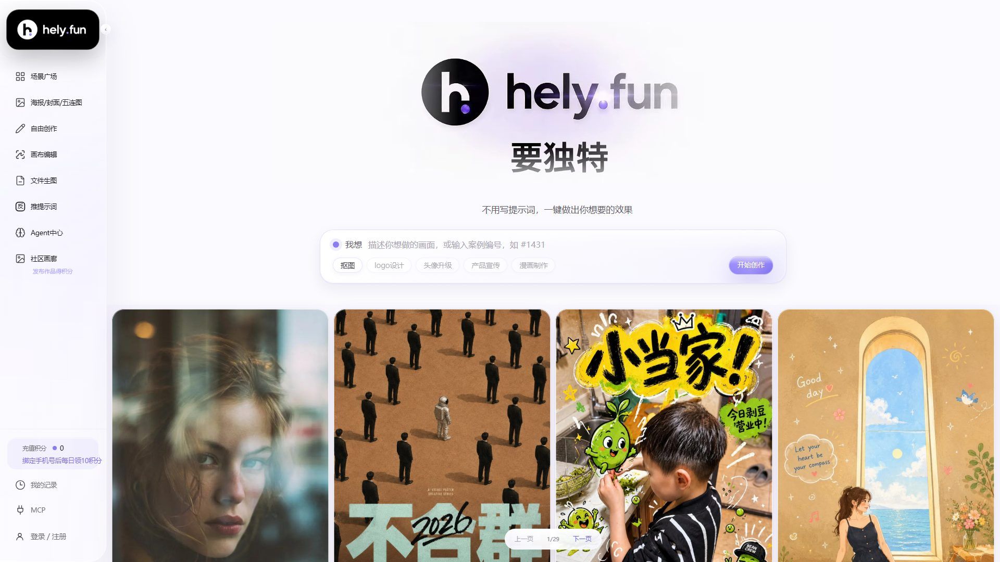
还在跑吗？
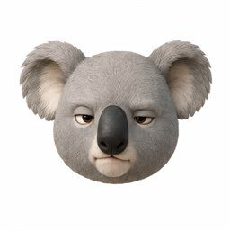


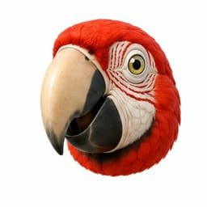
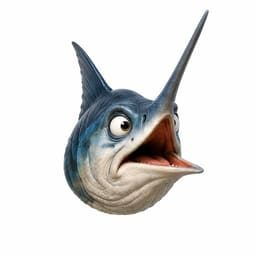


10 月 7 日 · 我对 Codex 说“我要开发一个针对本地生活商家……最重要的是一个五联图，主要平台还是抖音以及大众点评……要生成一个五联图的长图，然后自动切割，把五张图返回给用户。”
放到大众点评、抖音门店页，横着滑，画面连在一起。
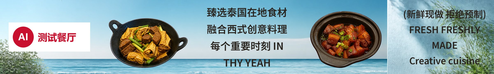
沿着长图，从左往右看一遍。
五张分别画，再拼。拼出来有四条缝。
让模型只画中间横条。位置对不上，放弃。
铺背景、贴菜品、排字。缝没了，可是“太丑”。
让模型设计整张图。程序只查菜品、接缝和错字。
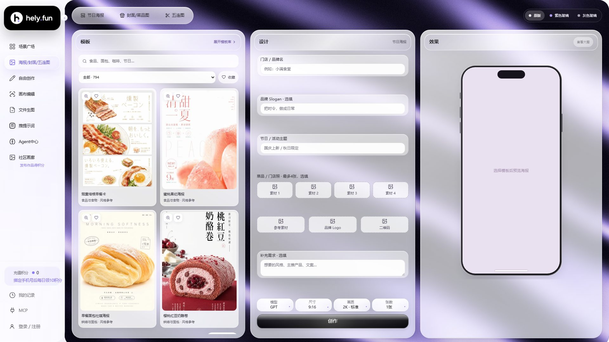
页面说“验证码过期”，其实码是对的。Supabase 免费额度超限，数据库被锁了。
怎么救的先恢复数据库连接，救回登录。再把 4036 个文件迁到 R2，前后约一周。
提示说码过期，也要查查数据库。用户只想把图二的辣椒鱼头放进图一。每次出错都加一道检查，最后连正常请求也被拦住。
怎么救的11 月 17 日，带图创作改回直接出图。
失败要比交付难。把经验变成知识，把知识写成 Skill。人来判断好不好。